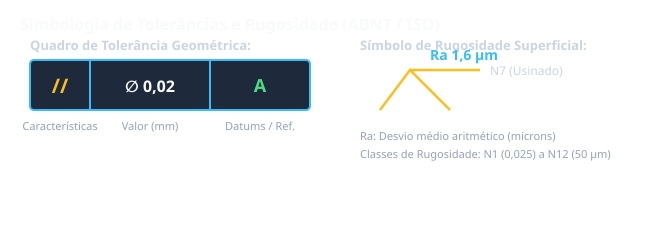

Situação de Aprendizagem 2: Tolerâncias Geométricas
2.1 O que são Tolerâncias Geométricas?
As tolerâncias geométricas controlam a forma, a orientação, a localização e o batimento de elementos de uma peça. São indicadas por símbolos específicos em caixas retangulares.

Vantagem sobre a cotagem tradicional: As tolerâncias geométricas controlam múltiplos aspectos da peça com uma única indicação.
2.2 Tolerâncias de Forma
Controlam a forma geométrica ideal do elemento:
| Símbolo | Tipo | Descrição |
|---|---|---|
| ─ | Linearidade | Controla se uma linha é perfeitamente reta |
| ○ | Redondeza | Controla se uma superfície circular é perfeitamente redonda |
| □ | Quadriculidade | Controla se uma superfície é perfeitamente plana |
| ◎ | Circularidade | Controla se uma superfície circular é perfeitamente circular |
2.3 Tolerâncias de Orientação
Controlam a orientação angular de elementos:
| Símbolo | Tipo | Descrição |
|---|---|---|
| ⌒ | Paralelismo | Controla se uma linha/superfície é paralela a uma referência |
| ⊥ | Perpendicularidade | Controla se uma linha/superfície é perpendicular a uma referência |
| ∥ | Angulação | Controla o ângulo entre duas linhas/superfícies |
2.4 Tolerâncias de Localização
Controlam a posição exata de elementos:
| Símbolo | Tipo | Descrição |
|---|---|---|
| ⌖ | Posição | Controla a posição de um elemento em relação a referências |
| sym | Simetria | Controla a simetria de uma superfície em relação a um plano |
2.5 Tolerâncias de Batimento
Controlam a variação radial de uma superfície em rotação:
- Radial: controla variação radial em torno de um eixo
- Face: controla variação axial em uma face
- Combinado: controla both radial e axial